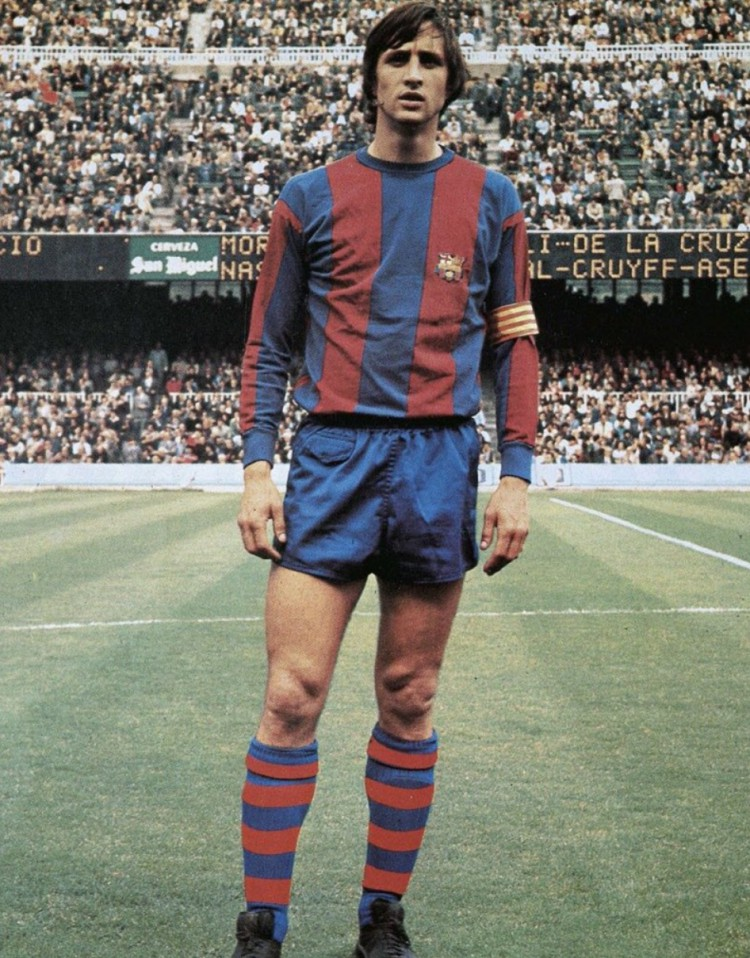

Bienvenue sur le site des fans du FC Barcelone
Choisissez un onglet pour découvrir l’histoire, la création, le palmarès et les légendes du club.
Histoire du FC Barcelone
Le FC Barcelone, fondé en 1899 par Joan Gamper, est bien plus qu’un club de football : un symbole culturel, sportif et social en Catalogne. Depuis sa création, il incarne la devise « Més que un club » — plus qu’un club.

Création du FC Barcelone
Le club a été fondé par un groupe de jeunes footballeurs passionnés. Leur ambition a donné naissance à une institution mondiale symbolisant la passion, la culture et le sport.

Palmarès du FC Barcelone
-
LaLiga — 27 titres

-
Ligue des Champions — 5 titres

-
Coupe du Roi — 31 titres

-
Supercoupe d’Espagne — 14 titres

-
Coupe du Monde des Clubs — 3 titres

Légendes du FC Barcelone
Johan Cruyff
Icône du football total, il a révolutionné le Barça comme joueur et entraîneur.
Lionel Messi

Meilleur buteur et joueur emblématique du club, véritable légende vivante.
Andrés Iniesta

Un des milieux les plus élégants de l’histoire du football, héros de 2010.